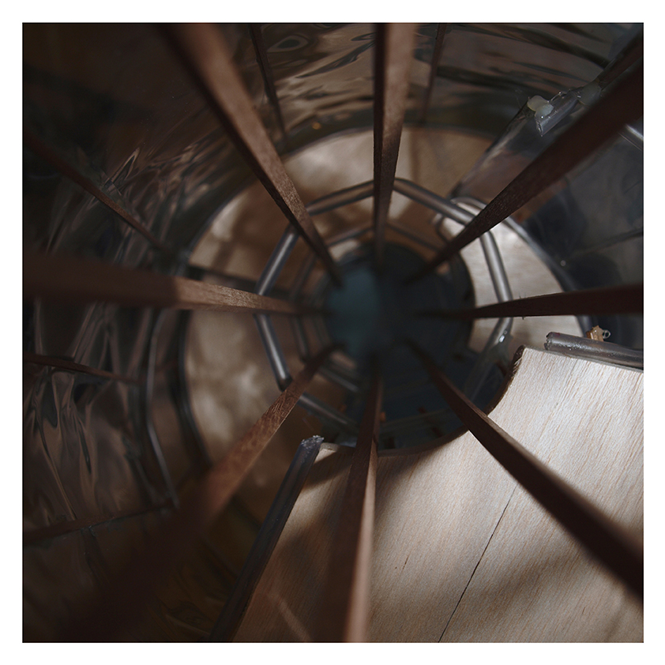
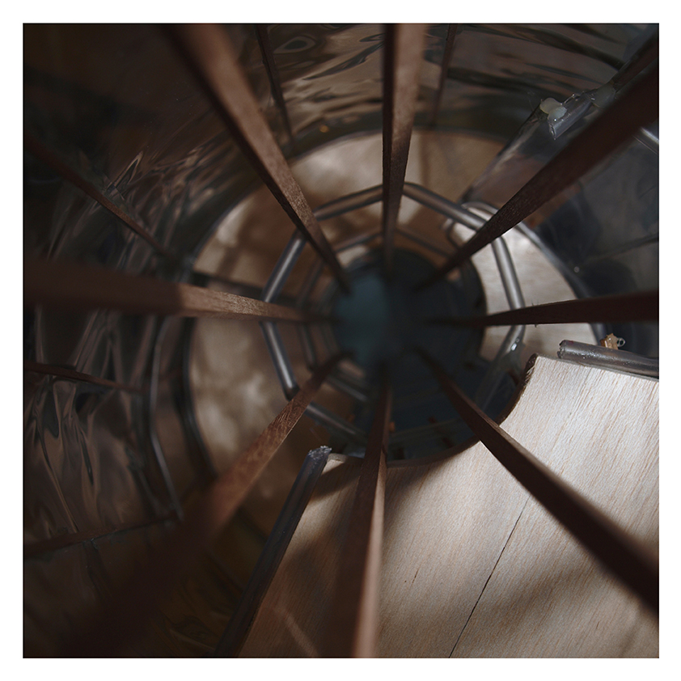

Home Work

Carved Space

Facing the Street

Inner Expansion

Intended Collision

Go for a Walk

OUThabit
Wooden Motion

Cult Artifact

Home Work
Carved Space
Facing the Street
Inner Expansion
Intended Collision
Go for a Walk
OUThabit
Wooden Motion
Cult Artifact
Solid constructions and thick walls are the materials that shape the void of the rugged field of Vilafamés. As a result, this situation generates a huge uncontrolled public space all around the village. Assuming this dichotomy between the massif of the constructed and the void of the empty space, the project intends to sculp the void facilitating the emergence of new paths, alternating constricted and expanded areas. In this way, the new crafted public space will be the one which shapes the new lower area buildings of the project, attached to the ground. On the other hand, as the altitude increases, the architecture, raising from the ground, prevailing and surrounding the void, will be set up to generate a cloistered space, where all the activities of the complex will happen together.
Students residence entrance

Axonometry

Floor Plan 1:200

Buildings Relationship Cross Section

Students Residence Cross Section

Main Residence Cross Section

Patio Cross Section

Main Residence Floor Plan 1:50

Model 1:500

Model 1:200

Students residencen section Model 1:20

Construction Detail

It is required to raise a tall mixed use building, together with the rehabilitation of an old sports hall sticked to it. The huge variety of activities the new building will embrace makes the horizontal floor distribution quite complex. In order to deal with this problem, it will be planned a vertical distribution of the uses along the building. Each floor gather a number of diverse activities, that can take place without any contact or possible interruption between each other. The ground floor and the two first floors are destined to comercial use and are connected with the renewed comercial building. The floors above are ocuppied firstly by the different typologies of residencial dwellings, and from the fifth floor to the top, the hotel rooms and suites appear alongside the dwellings. Finally, the roof floor turns up to be a great solarium which contains the hotel pool. This mixture of uses and activities is just possible thanks to the freedom the concrete structure of the building provides, allowing the carving of the projected cube´s volum. That way sunlight and natural ventilation are a constant on all the floors and provide and excelent environment in the whole building.
Building placement

Project's Floor Plan 1:5000

Building's Floor Plan 1:200

Dwelling & Hotel Arrangment Study

Building's Cross Section

Building's Side View

Dwelling Floors 1:100

Hotel Floors 1:100

Social Dweelings Facade Detail

Hired Dweelings Facade Detail

Hotel Facade Detail

It is required to raise a tall mixed use building, together with the rehabilitation of an old sports hall sticked to it. The huge variety of activities the new building will embrace makes the horizontal floor distribution quite complex. In order to deal with this problem, it will be planned a vertical distribution of the uses along the building. Each floor gather a number of diverse activities, that can take place without any contact or possible interruption between each other. The ground floor and the two first floors are destined to comercial use and are connected with the renewed comercial building. The floors above are ocuppied firstly by the different typologies of residencial dwellings, and from the fifth floor to the top, the hotel rooms and suites appear alongside the dwellings. Finally, the roof floor turns up to be a great solarium which contains the hotel pool. This mixture of uses and activities is just possible thanks to the freedom the concrete structure of the building provides, allowing the carving of the projected cube´s volum. That way sunlight and natural ventilation are a constant on all the floors and provide and excelent environment in the whole building.
Building placement